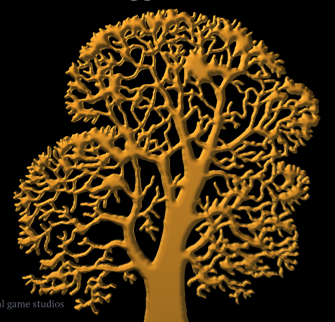
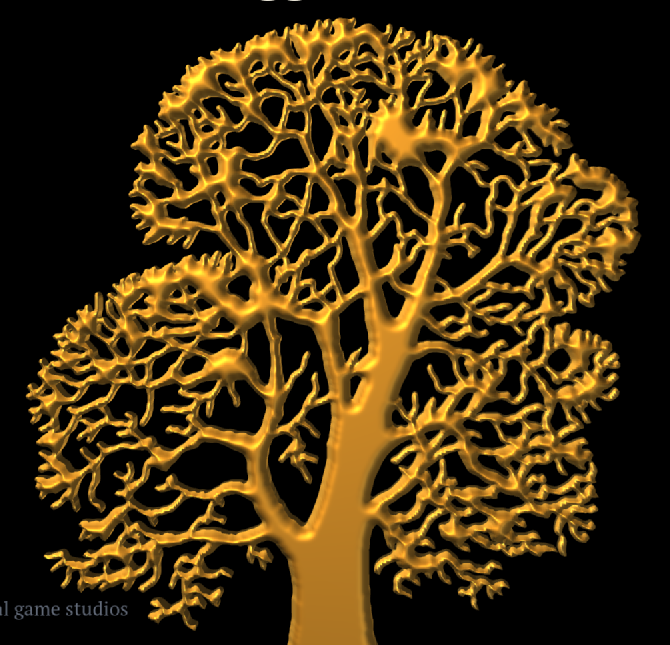
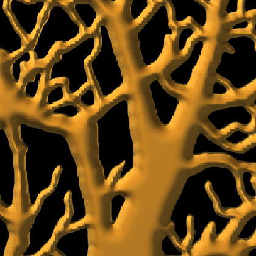
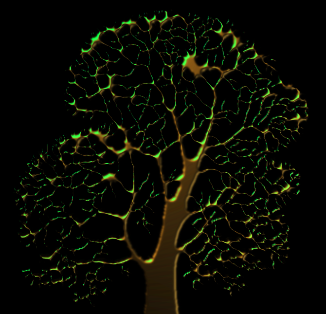

Зона МАТЕРИАЛЫ · дизайн-волна 28.08.2026 · заказ владельца — блокер убранства домов.
Полный дизайн: docs/design/MATERIALS.md. Здесь — карта, кадры и числа.
ТЗ владельца (записка №3) измерило то, что до сих пор описывали словами. Мера — ДЕТАЛЬ: средний модуль отклонения яркости пикселя от среднего по окрестности 3×3, то есть буквально «сколько структуры на масштабе пикселя».
| наш стенд | ДЕТАЛЬ | Skyrim (кадр S10) | ДЕТАЛЬ |
|---|---|---|---|
| штукатурка стены | 0.52 | ковёр (их худший) | 4.96 |
| столешница | 0.86 | бревенчатая стена | 5.01 |
| доски потолка | 1.93 | половицы | 5.54 |
| камень очага — наш лучший | 2.88 | столб-бревно | 9.31 |
И главный вывод не тот, которого ждёшь. Их ковёр беднее нашего очажного камня и по разбросу яркости (14.3 против 27.1), и по числу цветов (133 против 414) — и всё равно вдвое детальнее. Значит лечится не «добавить контраста» и не «добавить цветов», а добавить структуры на масштабе пикселя: волокно, шов, скол, ворс, зерно. Владелец назвал это словами «плоские, идеально ровные, монотонных цветов» — измерение говорит, что решающее из трёх слов — «ровные».
Оговорка не в нашу пользу, и её сделал сам ресёрчер: наш кадр в замере ужат с 1920×1080 до 1400×787, а пересчёт при уменьшении добавляет детальность на пиксель. Наши числа — завышенная оценка нашего же качества.
Что это значит для этой волны. Понятие Material — условие необходимое, но не достаточное: само по себе оно ДЕТАЛЬ не поднимет. Оно поднимет её тем, что даст веществу собственный лист, собственную амплитуду рисунка и собственный шаг повтора вместо одной общей простыни 9 × 4 с шагом в метр на всё. Порядок отсюда жёсткий: сначала имя, потом структура.
Участок ≥ 100×100 пикселей одного вещества, кадр FullHD без масштабирования,
дистанция 1 метр. Прибор — tools/quality/measure_surface.py, принят зоной как
штатный.
| критерий | порог | референс | сегодня | |
|---|---|---|---|---|
| К1 | СТРУКТУРА (ДЕТАЛЬ) — главный, критерий сдачи | ≥ 4.0 | 4.96–9.31 | 0.52–2.88 — брак безусловный |
| К2 | богатство тона (энтропия) | ≥ 6.3 бит | 5.87–7.62 | 4.58–6.14 |
| К3 | цветность (цветов/1000 пкс) — вспомогательный | ≥ 200 | 133–640 | 56–414 |
| К4 | РЕБРО: доля рёбер с фаской | 100 % | — | 0 % |
| К5 | ПОСАДКА: контактное затемнение | −15 % | — | нет |
| К6 | РАЗБРОС экземпляров | ≥ 4 % | — | четыре стула побитово одинаковы |
К1–К3 меряются по веществу, а не по кадру целиком: иначе яркий очаг вытянет среднее и спрячет плоскую стену рядом. Три обязательства при переписи прибора по-нашему: рукав печатает числа, а не приговор; контрольная рука обязательна (К1 обязан провалиться на нашей нынешней штукатурке); декодер PNG звать уже написанный, не заводить третий.
Слова Material в контракте рендера нет. «Из чего сделана поверхность»
решается в шести местах шестью разными способами, и переход между ними невозможен без
перепечки меша в другой поток .dfo.
| Поток / путь | Программа | Чем сказано «из чего сделано» | Что значит цвет вершины |
|---|---|---|---|
WOOD, GRND | prop | плоский цвет вершины; uv нулевые | rgb = альбедо, a = запечённое небо |
CARD | foliage | клетка листового атласа | r = вес качания, g = фаза, b = дрожание, a = небо |
BARK | foliage | координата: колонка u ≥ 0.8 | то же |
HOUS (v3) | prop + вырезанная плитка | пара ординалов (поверхность, тон) | rgb = альбедо (краска × мох), a = небо |
| набор деталей | foliage | номер плитки в цвете вершины | r = колонка, g = ряд, b = дрожание, a = небо |
| земля и тропы | terrain, path | сплат по уклону + два доп. листа | rgba = веса сплата |
fs_foliage.sc:73:
#define FLORA_BARK_COLUMN_U 0.8, и рядом в комментарии — «the column IS the
material». Фрагмент, чей u попал за 0.8, — это дерево, и оно не просвечивает.PartForge.h:146 объявляет PartMaterial — 11 ИМЁН (Timber, Plaster,
Stone, Thatch, Brick, Tile…), но живёт в engine/render, а рецепты домов читает
engine/world, которому запрещено знать про render. Рецепт физически не может
сказать «кирпич» — он говорит mat=4.engine/render/sources/Materials.h
— это не материалы, а look-dev окружения (солнце, туман, пороги сплата). Всякий, кто пойдёт
искать понятие по имени, найдёт цвет неба.
HouseStreamGpu — {texture_asset, normal_asset, emissive, bounds}.
Четыре поля, ровно те, что материалу и нужны. Собирается заново на каждой загрузке карты и
нигде не называется словом. И ObjectRegistry.h:83 уже пишет прямым текстом:
«Потоки .dfo — это ПРОГРАММЫ отрисовки, и их конечное число. Плитка — это
МАТЕРИАЛ». Понятие построено и работает — у него отнято только имя и постоянство.
Пара — это адрес картинки. Материал — описание вещества, у которого адрес картинки лишь одно поле из восьми. Каждая строка ниже — конкретный сегодняшний дефект.
| Чего нет | Сегодняшний дефект |
|---|---|
| имени | рецепт говорит mat=0, tone=2. mat=17 молча становится 17 % 9 = 8 = остекление — опечатка застекляет стену без единого сообщения |
| блика | золото герба, чугун петли и извёстка выходят из ОДНОГО ламберта. Случай, названный владельцем |
| эмиссии поверхности | сегодня это булев флаг куска: пламя либо горит целиком, либо не горит. Тлеющие угли невыразимы |
| тайлинга | span_m живёт у кузницы и до файла не доезжает. Соломенная кровля повторяется с шагом дощатой стены и читается ковром |
| кривой износа | ряд тона выбирается НА КУСОК: стена либо новая целиком, либо выветренная целиком |
| вариации внутри вещества | один кирпич на всю стену |
Пока шла эта волна, зона мебели напекла 20 предметов и назвала словами, из чего
каждый сделан (docs/reports/furniture-nomenclature.html). Это лучшее
доказательство блокера, какое можно предъявить: не рассуждение о нехватке понятия, а
список вещей, которые уже лежат на полке и врут о своём веществе, потому что сказать
правду им нечем.
У листа набора девять колонок: брус, доска, торец, камень, глина, штукатурка, солома, дёрн, глухое окно. Металла нет. Ткани нет. Стекла нет. Меха нет. Кожи нет.
| предмет | чем должен быть | чем ходит сегодня |
|---|---|---|
furn-cauldron | чугун | камень тёмного ряда под дёгтем |
furn-chest | дуб + полосы и замок кованого железа | железо — тот же камень под дёгтем |
furn-cupboard | дуб + ручки кованого железа | то же |
furn-candlestick | железо, воск, пламя | то же |
furn-sack | мешковина, лён | солома |
furn-basket | ивовый прут, плетение | солома |
furn-bottle | зелёное стекло, пробка | глухое окно |
| кувшин | глина под поливой | глина без поливы — блика нет |
| ковёр | шерсть | — |
Девять обходов — и все девять заявка ровно на те поля, которые вводит эта волна:
iron и gold-leaf (металл с бликом), linen (ткань без
зерна), полива кувшина (roughness на глине). Стекло — открытый вопрос:
прозрачность в минимум не входит.
При этом ни один из девяти не требует новой геометрии: у
furn-chest три куска, у furn-cupboard четыре, у
furn-cauldron два — ровно по числу веществ, которые предмет носит словами. Полка
мебели уже разделена по будущему материалу и готова к перекраске переименованием.
Узкий срез, доказывающий дизайн кодом. Всё за дозой DFN_MAT; обе руки —
из одной сборки (правило 47). Подопытный — золотой герб главного меню: он уже принят
владельцем, уже на полке, и его золото уже записано числом — доминирующий цвет
72 039 вершин поля rgb(199,153,56), uv нулевые во всех
166 326 вершинах. Материал не перекрашивает его ни на единицу; он добавляет ровно то,
чего у альбедо нет: как поверхность отражает.


gold-leaf (металл, блик).

Первая догадка 0.22 («золото почти зеркало») была физически правдоподобна и невидима на кадре — тот же класс ошибки, что первая полоса фейда листвы, растворившая все ели. Число выведено развёрткой по кадрам, а не вкусом.
| шероховатость | изменилось кадра | заметно (≥ 4/255) | пик прибавки |
|---|---|---|---|
| 0.22 | 0.211 % | 0.094 % — не видно вовсе | 89.4 |
| 0.40 | 2.324 % | 1.066 % — читается | 89.8 |
| 0.60 ✅ | 12.00 % | 7.004 % — ветви несут бегущую золочёную кромку | 89.8 |
Пик прибавки во всех трёх один и тот же (89.4 / 89.8 / 89.8) — прямое подтверждение, что нормировка по пику работает как задумано: шероховатость двигает площадь блика, а не яркость. Ради этого свойства она и выбрана.
Почему не физически правильные ~0.2. Наши источники — ТОЧКИ, а настоящее золочёное изделие бликует под ПРОТЯЖЁННЫМ светом (небо, окно, свеча в полуметре). Точечный источник — дельта, и лепесток обязан быть шире ровно настолько, насколько источник не точка. 0.60 — это не «наше золото шершавое», это поправка на то, чем мы заменяем протяжённый свет.
| мерка | значение | что означает |
|---|---|---|
| изменилось пикселей | 442 432 (12.00 %) | |
| из них заметно (≥ 4/255) | 7.00 % кадра | блик читается глазом, а не только прибором |
| убавка яркости | ровно 0 | материал только ДОБАВЛЯЕТ; ни один пиксель не потемнел |
| макс. прибавка яркости | +89.9 | |
| выбито в чистый белый | 0 пикселей | |
| цветность прибавки (336 743 неотсечённых) | 1 : 0.712 : 0.232 | блик несёт цвет САМОГО МЕТАЛЛА. У диэлектрика он был бы белым |
| цветность золота полки (199,153,56) | 1 : 0.769 : 0.281 |
Цветность прибавки идёт за цветностью вещества, а не за цветом лампы — это и есть всё утверждение волны, выраженное числом.
Честно: расхождение (0.712 против 0.769) — это отсечение в красном канале. У 21.2 % изменившихся пикселей подложка золота уже близка к 255 по R, и прибавке там некуда идти. Ядро блика уходит в бледное золото; тело блика тон держит.
DFN_MAT=0 сохранил один и
тот же md5 = 9400be73… через четыре правки шейдера и реестра. Ветка блика не входит при
roughness == 1 — и это не обещание, а совпадение хэшей.
Обе первые версии прототипа были правильны по учебнику и неверны у нас. Обе — про наш конвейер, и обе поймают следующего.
Первая версия считала блик от u_sunDir. Две руки замера вышли
побитово одинаковыми — волна, задуманная про металл, не показала ничего. Причина:
главное меню светит предмету СВОИМИ источниками, а солнца в кадре меню нет вовсе.
Металл жил ровно там, где блик не считался.
Это не частный случай меню: интерьер, факел, очаг и фонарь — весь ночной и внутренний мир освещён точечными источниками, а убранство домов живёт целиком внутри. Блик обязан считаться от того же набора источников, что и рассеянная доля.
Вторая версия несла классическую нормировку Блинна (n+8)/(8π) — она сохраняет
энергию лепестка, и это правильно для конвейера с HDR и тональной компрессией.
У нас их нет: forward-проход пишет прямо в LDR-цель, сверху палитра в 8 ступеней на
рампу. Измерено на кадре (шероховатость 0.22 → показатель ~851 → множитель ~34):
| R | G | B | |
|---|---|---|---|
| подложка под пиками (золото полки) | 120 | 84 | 28 |
| прибавка на тех же пикселях | +135 | +171 | +227 |
| сумма | 255 | 255 | 255 |
Прибавка оказалась ровно остатком до 255 по каждому каналу — блик выбивался в чистый белый. Золотой блик, обрезанный в белый, неотличим от блика на извёстке: волна доказывала бы обратное тому, что утверждает. Решение — нормировка по пику. Цена названа честно: шероховатость управляет ПЛОЩАДЬЮ блика, а не яркостью.
И проверка это пережила не изменившись — потому что она об ОТНОШЕНИИ пика к склону, а отношение от постоянной нормировки не зависит.
Три источника сошлись на этой волне: записка №1 — тренд правок движка
(docs/reports/materials-trend/, сверху от референса Готики 3 / Genome);
записка №3 — ТЗ владельца по кадрам Скайрима
(docs/reports/materials-spec/); и эта зона — снизу от движка. Обе читаны
после того, как прототип был написан.
Что взято у записки №3 целиком: измеренный диагноз мерой ДЕТАЛЬ (раздел 0) —
он переупорядочил миграцию, сделав структуру в лист отдельной волной и критерием сдачи;
шесть критериев и прибор; пять осей, включая разделение износа и выделки; дом реестра в
engine/core; граница стиля; вещества письма с первого дня (заведены в коде:
birch-bark, parchment, rag-paper,
seal-wax, ink); порядок работ с фаской первой.
| пункт | что решено | |
|---|---|---|
| совпало | материал = именованная запись данных, вызов только называет | ровно то, что строит MaterialRegistry. Пришли независимо с двух сторон |
| совпало | HouseStreamGpu — уже безымянный материал | взято в инвентаризацию дословно |
| совпало | приём «секция входит в личность, только если непуста» | заложен в MTRL с начала, а не придуман после |
| взято | износ вычисляемым весом, а не крашеным кистью (её главная находка) | взято целиком, стало §2.8 дизайна и волной 5. Все три входа уже считаются в fs_prop: видимость неба, мировой макро-шум двух периодов, мировая высота. Цена — одна клетка альбедо и один mix() |
| взято | id разрешается ТАБЛИЦЕЙ, никогда switch | прототип уже так написан. Иначе — третья закрытая сетка рядом с PartSurface/PartTone |
| взято | вершинная альфа — занятый канал с двумя именами одной величины | записано в контракт (§2.10), чтобы никто не завёл седьмой |
| разошлись | её §6.4: DrawParams — не дом для вещества | она права, решение координатора принято. Поля roughness/metalness объявлены ПЕРЕХОДНЫМИ с назначенной точкой смерти — волна 3, где дро начнёт нести material-id. Разбор в §2.7 |
| её дырка | экономика добавления материала — тупик к 12 городам | стало §2.6 с требованием O(1) на материал: ревизия — свойство ЛИСТА, а не всех листов; ключ кэша (лист, ревизия, клетка) |
| не берём | граф шейдерных элементов, отдельный specular-лист, крашеные веса, материалы земли в общую запись, прозрачность стекла | согласны с её доводами; записано как граница системы (§2.9) |
Полка — 2 544 .dfo (~249 МБ) и 194 .dfh. Ни один
файл не перепекается.
Механизм — одна функция: material_of(поверхность, тон) отвечает на
все 36 пар листа набора. Именованные отдают свою запись; остальные 28 получают
выведенный материал — та же плитка, тот же тон, умолчания по блику, износ по ряду.
Умолчания — это в точности сегодняшний ламберт, поэтому кадр не двигается.
Проверено на настоящем предмете полки. furn-bed.dfo — единственный файл
с непустой секцией HOUS, три куска:
| кусок кровати | пара сегодня | материал | |
|---|---|---|---|
| брус царг, 120 треугольников | HewnTimber / Dark | oak-log | имя есть |
| доска настила, 192 | SawnBoard / Mid | pine-board | имя есть |
| доска изголовья, 24 | SawnBoard / Dark | выведенный | имени нет — и это ветка, которую иначе не проверял бы никто |
| файл | что |
|---|---|
engine/render/sources/MaterialRegistry.{h,cpp} | понятие + 9 именованных веществ + полное отображение 36 пар |
engine/platform/render/interfaces/IRenderer.h | DrawParams::roughness/metalness — переходные, умолчания 1/0 |
.../bgfx/BgfxRenderer*.{h,cpp} | uniform u_matParams, ставится безусловно (uniform в bgfx липкий) |
.../bgfx/shaders/fs_prop.sc | лепесток блика от солнца и точечных; ветка не входит при roughness == 1 |
engine/render/sources/RenderSystem.{h,cpp} | ScreenProp::material |
engine/app/sources/MenuEmblem.cpp | герб спрашивает реестр про gold-leaf |
engine/app/sources/AppDoors.cpp | дверь DFN_MAT |
tests/render/MaterialRegistryTests.cpp | 7 случаев, 266 утверждений |
Четырнадцать веществ. Восемь из списка владельца — oak-log,
pine-board, brick-red, granite,
plaster-white, thatch, linen, iron; плюс
gold-leaf, тот случай, ради которого владелец назвал блик; плюс пять веществ
письма — birch-bark, parchment, rag-paper,
seal-wax, ink — заведённых с первого дня по ТЗ §7.
Почему письмо заранее, а не «когда дойдёт очередь»: та же причина, что у золота — пока вещества нет, предмет им притворяется, а притворство закрепляется в принятых витринах и потом стоит не доработки, а отмены. Девять таких отмен уже накопилось на полке мебели. Ни у одного из пяти нет плитки, и это утверждение, а не недоделка: у листа девять колонок, и ни одна не пергамент.
Рассинхронизация, которую заказ требует убрать. Одно понятие называется в четырёх местах, и ни одно из четырёх не выводится из другого:
| этаж | чем называет вещество | беда |
|---|---|---|
кузница (forge_furniture.cpp) | строкой "0".."8" | без имени и без проверки |
файл (.dfo, .dfh) | пара ординалов | закрытая сетка 9 × 4 |
набор (PartForge.h) | 11 ИМЁН | живёт в engine/render — имя недостижимо из данных |
рендер (HouseStreamGpu) | четыре поля | безымянный, пересобирается каждую загрузку |
Четвёртый — готовый материал без имени. Третий — готовые имена, до которых не
дотянуться. Задача не «изобрести материал», а соединить третье с четвёртым и поднять
в engine/core: потребителей уже четверо, пятым будет оружие, шестым — книги. Это и
есть «инструмент движка однозначно» из заказа.
Прототип этой волны лежит в engine/render, и это названный долг:
Material ссылается на PartSurface/PartTone из
PartsAtlas.h. Рекомендация зоны — разорвать ссылку (материал несёт имя листа
и координату, раскладку знает только render): это решает и переезд, и экономику O(1) на
материал. Переезд назначен волной 3; до него внешние потребители к реестру не подключаются.
| ось | состояние | что нужно |
|---|---|---|
| 1. вещество — имя, не число | девять колонок | шесть металлов ПОРОЗНЬ (у них разный цвет блика — в этом вся суть), четыре ткани, ворс, прозрачное, органика, письмо, особые |
| 2. выделка — 4 ступени | нет вовсе | грубое → рядовое → добротное → господское. «Износ = время, выделка = деньги» — без разделения «господское-изношенное» невыразимо: наш тон и износ слиты в одну ось |
| 3. износ | 4 ряда, однороден на кусок; мелким предметам запрещён печью | вычисляемый вес — он же снимает запрет |
| 4. блеск | приземлён этой волной | список обязанного блестеть: металлы, стекло, слюда, вода — главное зеркало мира, лёд, мокрый камень, глазурь, соль, кровь, шёлк |
| 5. свечение | булев флаг | шкала + цвет + пульс (угли пульсируют; обереги усиливаются при близости нечисти). Пульс — фазой, а не таймером в шейдере |
Плюс три обязательных поля, не оси: тайлинг в метрах, орнамент (у Скайрима резьба — половина богатой комнаты; свойство материала, не геометрии), разброс экземпляра (К6).
PartSkin::span_m существует, но
потребляется на выпечке (HewnBar.h:202 делит метры на span и получает uv),
всегда равен метру (PartForge.cpp:170), а .dfo не несёт его вовсе.
Шаг повтора запечён в uv и потерян: сменить тайлинг вещества сегодня — значит перепечь
геометрию. Поэтому соломенная кровля повторяется с шагом дощатой стены.
roughness ходит до нуля, metalness до единицы,
emission без потолка.
Порядок взят у ресёрчера (ТЗ §8), а не выведен заново. Он отличается от первого наброска зоны в двух местах, и оба раза прав он: фаска идёт первой (ни от чего не зависит, чинит половину заказа), прибор приёмки вторым (без него всё дальнейшее сдаётся на глаз).
| # | волна | чья | мерило |
|---|---|---|---|
| 0 | дизайн + прототип ✅ сделано | материалы | ctest 118/118; доза 0 бит-в-бит; кадр герба |
| Ф | ФАСКА НА РЁБРА (К4) — самое дешёвое в ТЗ | не моя | доля рёбер с фаской 0 % → 100 % |
| П | ПРИБОР ПРИЁМКИ | не моя | К1 обязан провалиться на нашей нынешней штукатурке |
| 1 | реестр в данные + паспорта поясов | материалы | тот же тест на данных; полка не меняется ни на бит |
| 2 | формат v4 (MTRL, ИМЯ не ординал) + экономика листов + tile_span_m доезжает до файла | материалы | --verify байт-в-байт на 2544; хэши не двинулись |
| 3 | материал-запись в engine/core; единый путь; смерть переходных полей | материалы | mat=17 даёт сообщение; 0 отличий кадра города |
| 4 | СТРУКТУРА В ЛИСТ (К1) — которой сдаётся заказ | материалы | ДЕТАЛЬ ≥ 4.0; отвергнутый образец — сегодняшние 0.52–2.88 |
| 5 | износ вычисляемым весом + снятие запрета печи | материалы | разброс тона по ОДНОЙ стене; мелкие предметы носят износ |
| 6 | вещества по оси 1: металлы и ткани | материалы | закрывает большинство из 32 «красок-затычек» и девять обходов полки |
| 7 | выделка · свечение шкалой · разброс (К6) | материалы | два стула расходятся ≥ 4 % |
furn-chest три куска, у
furn-cupboard четыре, у furn-cauldron два, ровно по числу веществ.
Полка готова к перекраске переименованием.
.dfo. Поднять контейнер до 4 и починить ворота (сегодня
они отвергают файл целиком, хотя пропуск неизвестных секций уже реализован) — или добавить
MTRL без подъёма? Зона рекомендует поднять и починить.paint (8 цветов) остаётся отдельным слоем — или
красная фалунь становится материалом? Слой: 1 доска × 8 красок = 8 комбинаций из двух
записей. Материалы: 8 записей на каждое красимое вещество.mortar и over. Заказ говорит «кладка brick-red
с раствором» — зона прочла это как «нужны», но это чтение, а не факт. В волну 4 или в 5?Materials.h, который про цвет неба. Переименовать в
LookDev.h (правка #include в ~10 файлах, ноль риска для кадра)?.dfo и 194 .dfh рисуются ровно
как вчера. Это дизайн-волна: доказательство понятия, а не миграция..dfo v4 спроектирован, но не написан — волна 2.foliage всё ещё значит «лист» — волна 3.